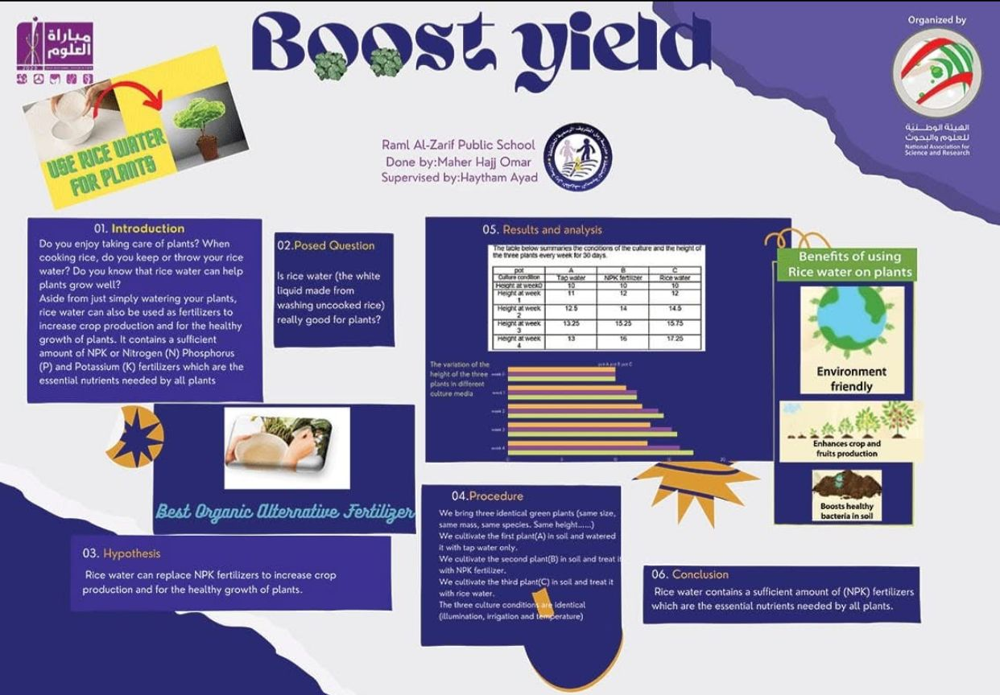
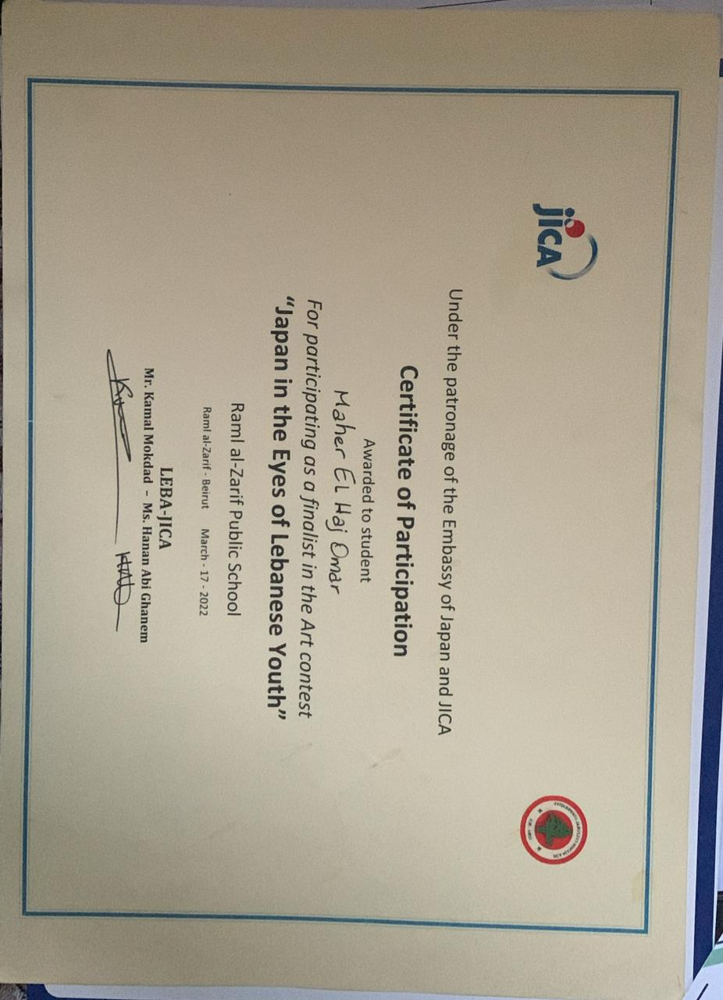
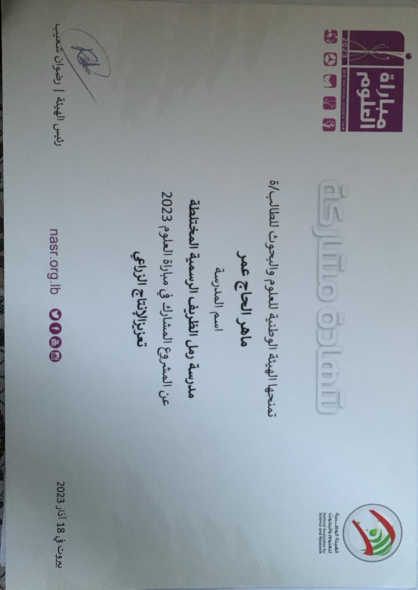
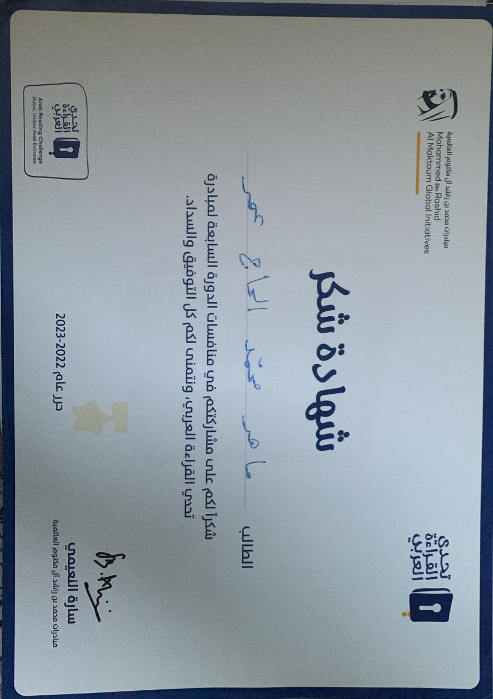

Hello — I'm Maher
I am a senior of 2026, currently learning programming. I love improving myself, learning new skills, and trying new experiences.
Skills
python
CSS
HTML
Problem Solving
Football
Projects
Boost Yield
This project explains how rice water can be used to improve plant growth. It includes introduction, hypothesis, procedure, results, analysis, and conclusions about using rice water as a natural organic fertilizer.
Certificate
